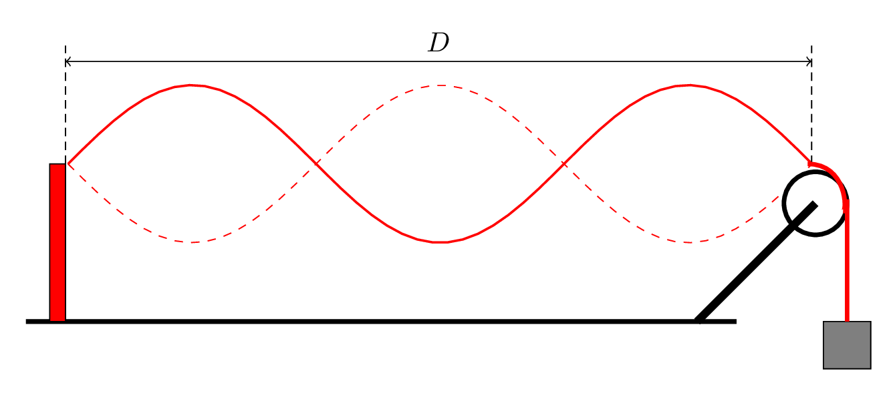

A mass of 1 kg is hung vertically from a spring stretching the spring 20 cm. It is then pulled 10 cm below its equilibrium position and released from rest. Find
the angular frequency of oscillation
the spring constant of the spring,
the amplitude of oscillation,
the kinetic energy of mass when passing through equilibrium,
the potential energy of the spring when the mass passes through equilibrium,
the time to first reach equilibrium,
the time to make one complete cycle.
2.
An automobile engine has a piston of mass 300 g, a stroke of 10 cm, an area of 10 \(cm^2\text{,}\) and a frequency of 1200 rpm. Find
the angular frequency of oscillation
the effective force constant for the oscillation
the amplitude of oscillation,
the energy of the oscillation,
the maximum velocity of the piston,
the maximum force on the piston.
If this force is produces by the gas in the piston, what is the maximum pressure in the piston?
3.
A mass of 500 g is attached to a horizontal spring of a force constant 200 N/m and allowed to oscillate horizontally without friction. When t = 0 it passes through the origin moving to the right with a speed of 2 m/s. Find
the angular frequency of oscillation
the amplitude of oscillation,
how long it takes to first slow down to 1 m/s,
the position when v = 1 m/s,
the force when v = 1 m/s,
the spring energy when v = 1 m/s.
4.
A transverse sine wave is expressed in MKS units as
the acceleration of the particle at that time and place,
the concavity of the wave at that time and place.
5.
A long rope is stretched out horizontally between two students. The student on the left moves his hand up and down sinusoidally with a frequency of 2 Hz and an amplitude of 10 cm. The wave moves to the right with a speed of 10 m/s and at time t = 0 the left end of the rope is moving downward through the mid-point of displacement. Find
the wavelength,
the wave number,
the angular frequency,
its angular frequency,
the equation for the wave as a function of time and position,
the displacement of the rope when x = 2 m and t = 1.5 s.
Find the amplitude, wavelength, frequency, period, and speed of propagation.
What is the equation of motion of the particle located at the origin of the coordinates?
What is the maximum magnitude of the transverse velocity of any particle on the string?
Sketch the shape of the wave when t = 0.001 s and \(0 \lt x \lt 0.2 m.\)
7.
A mass of m is suspended from one end of a string as shown below. The total length of the string is 1.8 m and its mass is 5 g. The length of the string between support and pulley is D = 1.5 m. The string is vibrating as shown with a frequency of 10 Hz. Find

the speed of a transverse wave in the string,
the wavelength of the wave,
the mass m being suspended.
8.
What is the speed of sound in water if its compressibility is \(45.8\times10^{-11} \,Pa?\)
What is the amplitude of the wave whose frequency is 1000 Hz and whose intensity is \(10 \,W/m^{2}?\)
9.
What is the speed of sound in a steel rod of length 1 m, diameter 1 cm, density \(7.8 \,g/cm^{3},\) and Young’s modulus \(20\times10^{10} \,Pa?\)
What is the intensity of the sound wave in such a rod if the frequency of the wave is 100 Hz and the amplitude is 0.1 mm?
10.
What is the speed of sound in air if the temperature is \(100\,^{o}F?\) Assume that air is an ideal gas with a molecular mass of 28.8 g/mole (slightly more than that of nitrogen) and that air is diatomic with \(\gamma = 1.4.\)
What is the density of the air if the pressure is \(1 \,atm = 1.013\times10^{5}\, Pa?\)
How far do the air molecules move (from side to side) when a wave passes by if its frequency is 400 Hz and its intensity is \(1 \,mW/m^{2}?\)
11.
A wave disturbance is described by the function
\begin{equation*}
\vec{J} = \frac{(- 5.4 T \,m^{2}s^{2} \hat{k})}{[(40 s x + 30 s y + 5 m t)^{2} + 500 \,m^{2}s^{2}]}
\end{equation*}
What is the disturbance at (- 25 cm, 50 cm, 10 cm) at 3.0 s?
Is the wave longitudinal, transverse, or neither?
Organ Pipe.
12.
A string instrument has a string of length 80 cm and a linear mass density of 5 g/m which vibrates with a fundamental frequency of \(400 \,H_{z}.\) Find
the tension in the string,
the frequency and wavelength of its second harmonic, and
the frequency and wavelength of its third overtone.
13.
An open-ended organ pipe has a length of 2 m. If the speed of sound in air is 345 m/s, find
the pipe’s fundamental frequency and wavelength,
the frequency and wavelength of its third harmonic, and
the frequency and wavelength of its second overtone.
14.
An organ pipe with one end closed has a length of 50 cm. If the speed of sound in air is 345 m/s, find
the pipe’s fundamental frequency and wavelength,
the frequency and wavelength of its third harmonic, and
the frequency and wavelength of its second overtone.
15.
Sound of frequency 300 Hz is incident normally upon a wall and reflected back producing a standing wave.
What is the minimum distance from the wall that you could stand and hear no sound?
Where does the second node occur? Assume the speed of sound is 345 m/s.
16.
Two synchronized speakers of frequency 200 Hz are located at points (4 m , 1 m) and (4 m, -1 m), respectively. Where along the y-axis do
constructive interference and
destructive interference occur?
What is the phase angle between the two waves at the point (0, 1 m)?
17.
You have strung a uniform steel wire fixed between two posts, 100 m apart, and find that the fundamental mode has a frequency of 300 Hz.
What is the second overtone frequency of this wire?
What is its fourth harmonic?
18.
A water wave demonstration tank is 30 m long. At one end, at the origin, Mary is generating waves described by the function
\begin{equation*}
y_{1} = 2.0\,cm \cos [ \pi/(18 \,m) ( 4 x - (1 \,m/s) t ) ].
\end{equation*}
At the other end Paul is generating waves described by
\begin{equation*}
y_{2} = 4.0\,cm \sin [ \pi/(6 \,s) ( ( 2 \,s/m ) x + 0.5 t ) ].
\end{equation*}
At \(x = 20\, m,\) Rita is recording the water level.
What level does she record at t = 8 s?
What frequency describes the data she records?
19.
An organ pipe is effectively open at one end, closed at the other, and has a fundamental frequency of 110 Hz.
How long is the pipe?
What should be the fifth resonance frequency for this pipe?
Sound.
20.
A sound wave in air has a displacement amplitude of 0.01 mm and a frequency of \(300\, H_{z}.\) If the speed of sound is 344 m/s and the Bulk modulus of air is \(1.42\times10^{5} \,Pa,\) find
the wavelength of the wave,
the pressure amplitude.
If y(0,0) = 0, what is the displacement of the air molecules from their equilibrium position at x = 1.5 m when t = 1 ms?
If y(0,0) = 0, what is the pressure of the wave at x = 1.5 m when t = 1 ms?
21.
A sound wave in air has a displacement amplitude of 0.01 mm. If the speed of sound is 344 m/s and the density of air is \(1.20 \,kg/m^{3},\) find
the pressure amplitude of a \(400\, H_{z}\) wave,
the intensity of the \(400 \,H_{z}\) wave,
the intensity level of the \(400 H_{z}\) wave.
the pressure amplitude of a \(1000\, H_{z}\) wave,
the intensity of the \(1000 \,H_{z}\) wave,
the intensity level of the \(1000 H_{z}\) wave.
22.
The sound from an explosion is heard at a distance of 50 m with an intensity of \(0.1\, W/m^{2}.\)
What would be its intensity at a distance of 1000 m?
What intensity level is the sound at 1000 m?
What is the total acoustical power output of the explosion?
If the sound pulse lasts 0.2 s, how much acoustical energy was generated by the explosion?
23.
What is the intensity level of a sound wave whose intensity is \(5.00\times10^{-6} \,W/m^{2}?\)
What is the intensity level of a sound wave in air at \(30\,^{o}C\) whose pressure amplitude is 0.01 Pa?
24.
Most people interpret a \(9.0 \,dB\) increase in sound intensity level as a doubling in loudness. By what factor must the sound intensity be increased to double the loudness?
25.
A police car emits a sound of \(300 H_{z}\) while moving to the right with a speed of 30 m/s when the speed of sound in air is 345 m/s. What is the frequency heard by an observer
at rest in front of the car,
at rest behind the car,
moving to the left at 20 m/s in front of the car,
moving to the right at 20 m/s behind the car?
26.
Two cars have identical horns which emit \(200 H_{z}\) frequencies. The first car is at rest and the second is moving away from the first at 30 m/s. An observer is between the two cars moving away from the first at a speed of 10 m/s. There is a 5 m/s wind blowing toward the first car from the direction of the other two cars. The speed of sound is 340 m/s.
What is the frequency of the first car as heard by the observer?
What is the frequency of the second car as heard by the observer?
What is the beat frequency heard by the observer?
27.
A galaxy is observed to have a red shift in its spectrum which doubles the wavelength of each spectral line.
Is the galaxy moving toward us or away from us?
How fast is the galaxy moving?
What is the distance to the galaxy in light years assuming the universe is 12 billion years old?
28.
Two horns using the same design are supposed to be playing (simultaneously) a sustained resonant note of 300.0 Hz, but they are not quite identical so the longer instrument is a bit off. If the beat sound annoys listeners with a 5-second cycle, what is the frequency from the off-tune instrument?